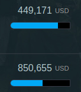

With 2.03 , there’s a proposal to change the name of the transaction code 2 from Commitment to Outgoing Commitment.
There was a long thread on this - but it seems to be now closed, hence this post.
In 2.02 a new transaction type “Incoming Commitment” was added to the standard.
Therefore, my understanding is that this change in 2.03 is to help clarify the differences between the two types. I don’t think we got to consensus on the original post - so would appreciate any insight @Herman @pelleaardema @rolfkleef
On taking a look at 2.03 developments, I noticed a few things:
1. Different names, very similar descriptions
The description text for these two transaction types are still very very similar:
Outgoing Commitment:
A firm, written obligation from a donor or provider to provide a specified amount of funds, under particular terms and conditions, for specific purposes, for the benefit of the recipient.
Incoming Commitment:
A firm, written obligation from a donor or provider to provide a specified amount of funds, under particular terms and conditions, reported by a recipient for this activity.
There was some discussion about revising these descriptions, but this didn’t make it to the TAG standards day, or any further it seems (despite the GitHub issue being closed)
I do think people should take a look. With the renaming to “Outgoing”, the text inclusion of “from a donor” seems confusing. What do others think? Can we afford subtle differences in meaning?
2. Continued potential for different uses for Outgoing Commitment?
Secondly, here’s a point from the original thread, regarding two potential uses of the Commitment transaction type, amongst publishers:
We're committing this value to this activity aka the total-budget
We're committing this value to this partner
It seems that updating the name partly helps, but the lack of development of the description text means we are not fully addressing this. It’s very likely that we will leave people more confused, I would argue…
3. Impact on rules and norms established for Commitment
Finally, we should note where there are some rules and norms around data uses in place that seem to rely on the idea of a Commitment being something that applies to the whole project:
- In the budget element we have:
The total budget for an activity should be reported as a commitment in the transaction element.
- The IATI dashboard, for the forward looking calculations declares:
activities are excluded from forward looking calculations if they contain commitment transactions and 90% of the total commitment value has already been disbursed or expended in the corrsponding year or previously.
(NB: I noted a splling mistake in the dashboard via checking this)
- I believe d-portal uses Commitments to create visuals such as this, by comparing with Disbursements and Expenditures

Therefore, if the meaning of a Commitment now shifts to being something outgoing from one activity to another, do we need to consider the impact we might be having elsewhere?
Also tagging @YohannaLoucheur @SJohns @bill_anderson @JohnAdams @rolfkleef as they commented on the original thread - but thoughts from all others welcome!
And, if you make it this far : I give you The Commitments